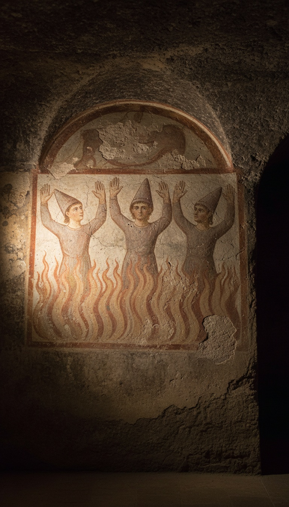

A Babylonian king threw three bound men into a furnace, looked inside, and counted four men walking free.
That is the whole flip, and it sits in Daniel chapter 3. The king was Nebuchadnezzar II, ruler of Babylon from 605 to 562 BC. The men were three Judean exiles, Hananiah, Mishael, and Azariah, whom the Babylonian court renamed Shadrach, Meshach, and Abednego. The fourth figure has no name in the text. He entered a sealed fire that the king's own men had just died feeding. When the three walked out, he never came with them. The people closest to this story have spent eighteen centuries painting him, carving him, and naming him.

The Fire Killed the Men Who Fed It
Nebuchadnezzar set up a golden image on the plain of Dura, sixty cubits high and six cubits wide, and ordered every official in the province of Babylon to bow when the music played (Daniel 3:1-5). Three men stayed standing. The king was “full of fury” and gave three orders in a row. He had the furnace heated seven times hotter than usual (3:19). He had the strongest soldiers in his army bind the three men in their coats, trousers, and hats (3:20-21). Then he had them thrown in.
The heat killed the soldiers first. Daniel 3:22 says the flame “slew those men that took up Shadrach, Meshach, and Abednego.” The executioners died at the mouth of the furnace. The three condemned men “fell down bound into the midst of the burning fiery furnace” (3:23). This was a fire that killed trained soldiers who only got close enough to throw something in.
The King Counted Twice
Then Nebuchadnezzar looked inside, and he jumped up. Daniel 3:24 says he “rose up in haste” and turned to his counsellors with a question: “Did not we cast three men bound into the midst of the fire?” They answered, “True, O king.”
That exchange is the receipt. Before he says what he sees, the king confirms the headcount with his own court. Three men went in. Three men were bound. His advisers stand behind the number. Then he says it: “Lo, I see four men loose, walking in the midst of the fire, and they have no hurt; and the form of the fourth is like the Son of God” (3:25).
The Aramaic phrase is bar elahin, “a son of the gods.” A Babylonian king who worshipped Marduk used the only category he had for what he was looking at. He was describing a being who belonged to the divine world. Four men, walking loose, inside a fire that had just killed his soldiers at the door.
The fire burned through the ropes and killed the soldiers at the door. It left the hair on three men's heads untouched.
Only the Ropes Burned
Nebuchadnezzar went to the mouth of the furnace and called the three men out by name. They walked out on their own (3:26). What happened next was an inspection with an audience. Daniel 3:27 lists who gathered around them: the princes, the governors, the captains, and the king's counsellors. The whole administrative class of Babylon looked the three men over.
Three findings, straight from verse 27. The fire had no power on their bodies. Their hair was intact. The smell of smoke had never touched their clothes.
The ropes, though, were gone. The king saw them “loose” while they were still inside. A fire hot enough to kill men standing outside it burned away the bonds and left the fabric of the coats unchanged. That is a fire being told what to burn. Something inside that chamber was making the choices.
The Greek Daniel Says Someone Came Down
The Greek translation of Daniel, preserved in the Septuagint and still printed in Catholic and Orthodox Bibles as Daniel 3:24-90, adds 68 verses inside the furnace scene. This section, the Prayer of Azariah and the Song of the Three Young Men, records the moment the fourth figure arrived.
Verses 49 and 50 say the angel of the Lord came down into the furnace with Azariah and his companions. He drove the flame out of the furnace. He made the middle of it “like a moist whistling wind,” so the fire never touched them. Three actions in two verses: he descended, he pushed the fire back, and he turned the center of the furnace cool.
Skeptics grab verse 28, where Nebuchadnezzar blesses the God “who hath sent his angel,” and argue the fourth figure was a minor messenger or a king's heat-struck vision. The text breaks both readings. A vision does not burn off ropes, and a vision does not leave the whole court of Babylon sniffing the prisoners' coats for smoke. And “the angel of the LORD” is the same title used in Exodus 3:2 for the figure inside the burning bush, a fire that burned and never consumed the bush, where the voice then speaks as God himself. Daniel 3 is the second time in scripture a fire refuses to consume, and both times someone is standing inside it.
The Church Fathers Named Him
The earliest Christian readers identified the fourth man directly. Hippolytus of Rome wrote his Commentary on Daniel around 204 AD, the oldest surviving Christian commentary on any book of the Bible, and he read the fourth figure as the Word, the pre-incarnate Christ. Jerome, working in Bethlehem, returned to the same furnace in his own Commentary on Daniel in 407 AD and read the angel as a figure of Christ.
Their reading follows the text. A pagan king looks into a fire and sees a son of the gods standing beside three condemned men. Six centuries later, the men who translated and preached that text named the figure outright.
They Painted It Underground
The early Christians of Rome buried their dead in the catacombs outside the city walls, and they chose this scene for the walls. In the Catacomb of Priscilla on the Via Salaria, the chamber known as the Greek Chapel holds a third-century fresco of the three young men standing in the flames in Phrygian caps, arms raised in prayer, with a dove overhead. The Via Latina catacomb, painted in the fourth century, carries the scene again.
The same image moved into stone. Fourth-century Christian sarcophagi, now in the Museo Pio Cristiano inside the Vatican Museums, carve the three men in the furnace next to Jonah and Daniel in the lions' den. Those are all rescue scenes, placed on coffins by people who expected to be rescued. Around 1000 AD, the Menologion of Basil II, held today in the Vatican Library, painted the three young men with an angel standing in the fire beside them. A stained glass window in Dublin still shows the furnace scene today.
The timing explains the choice. Under Emperor Decius in 250 AD and Diocletian in 303 AD, Christians were ordered to offer sacrifice before the emperor's image or die. That is Daniel 3, repeated in Rome. The people who painted the furnace on their burial chambers were facing the same order, and they painted the one account where a fourth figure walked into the execution with the condemned.
Go back to Daniel 3:26 and read it slowly. The king calls three names. Three men walk out. The princes, governors, and captains inspect three bodies. The fourth figure, the one the king counted with his own court as witness, is never called out, never inspected, and never seen leaving. The text moves on to Nebuchadnezzar's decree and leaves him standing in the flames.
A fire that killed soldiers at the door. Ropes burned away while cloth stayed clean. A figure a Babylonian king called a son of the gods, who came in with no door opening and left with nobody watching. So where did the fourth man go when the fire died down, and why does Daniel refuse to write down his exit? Tell me who you think was standing in that furnace.
Before you go
7 books the Vatican doesn't want you reading. Free PDF — the texts they cut, with sources. Joined by 140+ Inner Circle members.
No spam. Unsubscribe anytime.
Go deeper
The Hidden Canon, Vol. I — Enoch. Jubilees. Thomas. Mary. Judas. 90 pages, 14 chapters, every receipt cited. The books your Bible quietly removed.
Read the Canon →Books that informed this investigation
As an Amazon Associate, Hidden Epoch earns from qualifying purchases. Cost to you: nothing.
Research safely
The VPN we use to research without being tracked. First 3 months free.
Get NordVPN →